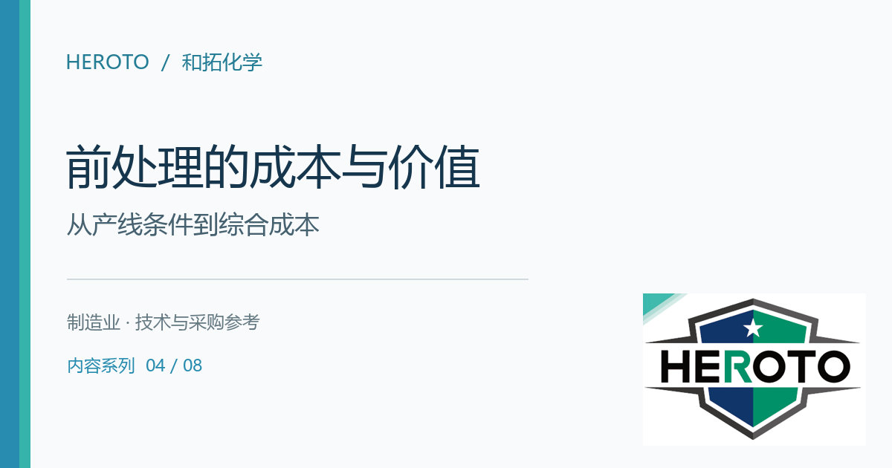
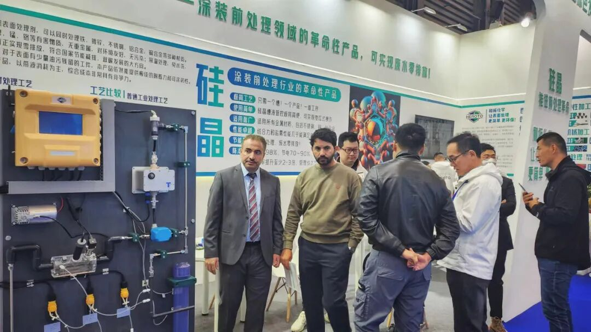
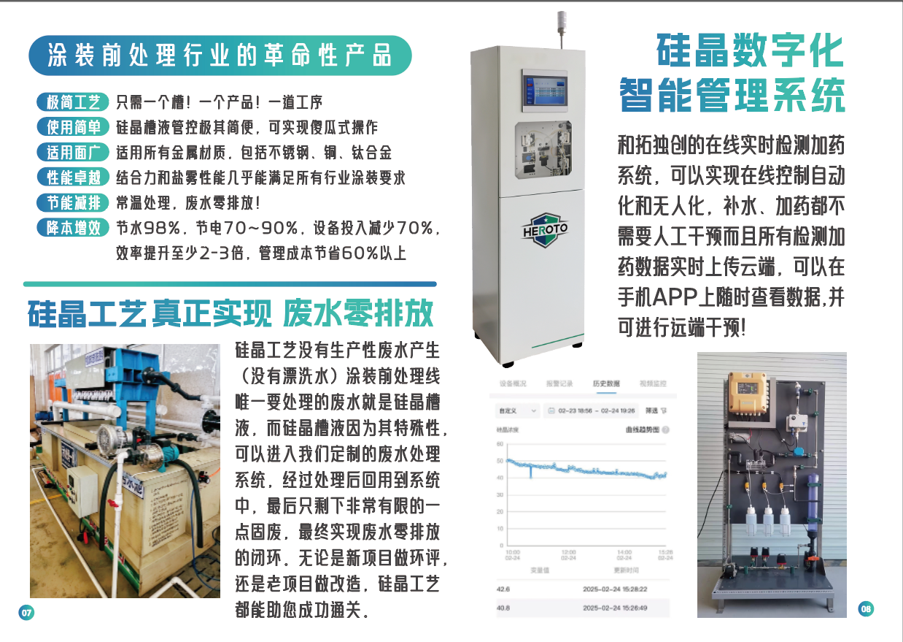
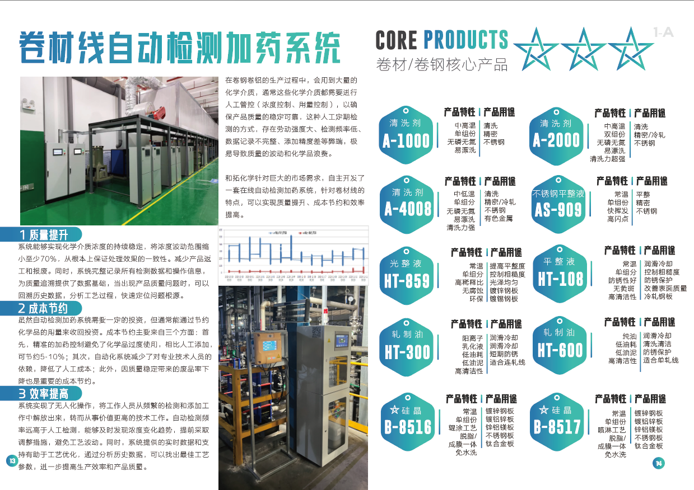

封面候选 · 渠道裁切与使用范围待客户确认4、从“成本中心”到“竞争利器”：和拓硅晶技术如何让涂装前处理实现“降维打击”
和拓化学 · 企业技术内容 / 排版稿 v2 / 1716 字符
在制造业的江湖里，涂装前处理一直是个“吃力不讨好”的环节。它不可或缺，却又伴随着高昂的能耗、复杂的工序、头疼的废水处理，以及随时可能出现的质量波动。尤其在“双碳”目标和环保法规日益严格的今天，这道工序更像悬在企业头上的达摩克利斯之剑。
有没有一种可能，让这个“成本黑洞”变成企业的“增效引擎”？

原稿配图 · 正文块 6；图示内容请客户复核和拓化学（HEROTO）的硅晶LUMINCOAT技术，正用一系列真实的实战案例，给出肯定的答案。它带来的不仅是一款产品，更是一场关于“简单、环保、降本”的涂装前处理革命。
案例一：根治“隐形开裂”，让20%的不合格率成为历史
客户痛点： 一家生产车用空气干燥罐的汽车零部件企业，曾面临一个令人头疼的难题。工件在喷涂后还需进行180度折弯和滚边铆合，由于原陶化工艺形成的膜层韧性不足，导致漆面在加工时频繁开裂，不合格率高达20% 。这不仅意味着材料和人工的浪费，更随时可能影响主机厂的生产节拍。
和拓方案： 和拓团队深入现场诊断后，并未简单替换药剂，而是针对其“流水线速度快、清洗时间短”的特殊工况，定制了 “连续3道硅晶B” 的创新工艺。这道工艺确保了在极短的处理时间内，也能实现彻底脱脂和高效成膜。
实战效果：
质量飞跃： 采用硅晶工艺后，漆面与基材的结合力大幅提升，折弯滚边处的开裂问题被彻底解决，不合格率从20%骤降至1%以下，几乎消灭了因涂层失效导致的废品。

和拓宣传册 2025 · 原图 5（宣传资料，指标须另附检测或测算依据）环保达标： 新工艺全程无需水洗，从源头上掐断了废水的产生，真正实现了该工段的废水零排放，帮助企业轻松通过了严苛的环评审查。
案例二：击破“返锈魔咒”，让综合成本一降再降
客户痛点： 一家钣金加工喷涂企业，长期被一个“季节性”问题困扰。每逢夏季或阴雨天气，工件在喷涂前就极易生锈，尤其在换粉停线期间更是“锈迹斑斑”，导致大量返工，效率低下，成本高企。频繁的槽液管控也耗费了大量人力。
和拓方案： 和拓为其设计了 “硅晶A→硅晶B→硅晶A” 的组合工艺。该方案不仅具备卓越的脱脂和防锈能力，能在常温条件下为冷轧板提供长达7-15天的裸膜防锈保护，杜绝了工序间的返锈风险。
实战效果：
降本增效显著： 改用硅晶后，产品质量异常稳定，返工率大幅降低。经客户核算，仅电费一项每月便可节省15,000元。综合水费、废水处理费、人工管理费的节省，每月综合成本直降近8万元，一年就近百万。
管理极致简化： 复杂的槽液检测和添加工作被大幅简化，甚至可与和拓的数字化管理系统对接，实现“傻瓜式”操作和无人化管理，让现场人员从繁琐的检测中彻底解放出来。
案例三：破解环评“紧箍咒”，助力新项目通关
客户痛点： 随着国家对水资源管理日益严格，尤其是针对涂装前处理这类废水排放大户，很多新建或改造项目的环评审批中，“废水零排放”已成为一项硬性指标。传统工艺路线下，这意味着高昂的废水处理设备投入和运营成本。

和拓宣传册 2025 · 原图 8（宣传资料，指标须另附检测或测算依据）和拓方案： 一家彩涂铝板企业在新项目规划时，面临“不零排、不批建”的困境。和拓为其导入了整套硅晶工艺，并配套了常温油水分离处理系统。该方案不仅在前处理环节本身不产生漂洗废水，更将唯一需要处理的硅晶槽液通过定制系统进行净化回用，最终仅产出极少量固废，形成闭环。
实战效果：
项目成功落地： 硅晶方案帮助该企业从源头上解决了废水排放问题，使新项目顺利通过环评审批并成功投产。
构筑长期竞争力： 当同行还在为不断上涨的排污费和环保处罚风险而焦虑时，采用硅晶工艺的企业已将“绿色低碳”转化为实实在在的竞争优势，赢得了更多优质客户的订单。
写在最后
这三个案例只是和拓硅晶技术在各行业应用的缩影。它之所以能被称为“革命”，在于它跳出了“在现有工艺上修修补补”的惯性思维，通过跨界创新，用更简单的化学、更智能的管理，直接颠覆了复杂、高耗、高污的传统模式。
当你的竞争对手正通过硅晶工艺，以50%以上的综合成本降幅和无可挑剔的环保表现轻装上阵时，你还在旧赛道上负重前行吗？
和拓化学，正致力于用化学，让表面处理变得更简单、更环保。这不仅是技术的胜利，更是商业智慧的体现。